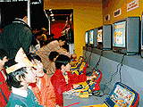
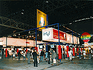
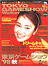

|
最新作が一堂に!! 出展者数は92社。総出展小間数は過去最高1481小間
|
|
家庭用テレビゲーム産業は、ソフトウェアとハードウェアの総出荷額が1兆円を突破（「'98CESAゲーム白書」による）。国内においては、小学生など低年齢層のゲームユーザーからも、多くの支持を得ています。また、ソフトウェア、ハードウェアとも輸出が好調で、新たな輸出産業としての地位を着実に確保しつつあります。
今回の東京ゲームショウは、今冬発売される注目の最新ソフトウェアはもちろん、女性の方々や低年齢層の子供たちを中心とした家族の方々などが楽しめる多彩なソフトウェアや、インターネットの普及に伴って活況を呈するネットワークゲーム、そして、最新ハード向けソフトなどが一堂に会します。
主催者である社団法人CESAでは、第5回目というひとつの節目を迎えて、ゲームファンはもとより小学生や一般の皆様にも十分に楽しんでいただける企画をもって準備を進めています。
|
|
「東京ゲームショウ'98秋」は、本年春に定めたコンセプト「GAME EVOLUTION」を通年コンセプトとして踏襲し、新たなテーマ「ゲームパワー、見せてあげる」を設定しました。活力であり、栄養であり、元気の源であり、そして、才能となりうる“ゲームのもつエネルギー”が多くの人々に「変革」をもたらすさまざまな“パワー”を、来場いただいた皆さんに直に感じていただけるゲームショウにしたいとの意図から、このテーマとしました。
|
●キャラクターのマスコットネームは、“フェレッタ”
ポスターデザインは、宇宙に飛び出す“フェレッタ”!!
|
|
キャラクターのマスコットネームは、“フェレッタ”。「東京ゲームショウ'98春」開催に際して、一般公募作品の中から大賞に選ばれたメインビジュアルに登場したこのキャラクターは、作者のペットである「フェレット」をイメージモチーフにしたものです。
これまで、このキャラクターのマスコットネームに関する問い合わせを数多くいただきました。東京ゲームショウイベント事務局では、本年5月、インターネットCESAホームぺージ上でネーミング案を募集。寄せられた977件のネーミング案を参考に検討した結果、キャラクターを端的に言い表し、誰にも覚えやすく、親しみやすいネーミングである「フェレッタ」としました。
「東京ゲームショウ'98秋」のポスターデザインは、「フェレッタ」がスカイボードに乗って無限の宇宙を飛んでいる様子を表現しています。
|
|
●総出展者数は、92社。総出展小間数は、過去最高の1,481小間 |
| 総出展者数は92社（一覧はこちら）、総出展小間数は1,481小間（前回開催は、1,367小間）となりました（9月24日現在）。1社平均の出展小間数は、前回開催時の14.7小間を上回る16.1小間となりました。
|
●会場は、幕張メッセ展示ホール1から8までを使用。
展示面積、約54,000平方メートル。安全性を考慮したレイアウトに
|
展示ホール1から8までを使用、展示面積は、前回同様の約54,000平方メートル。展示ホール1には、前回と同じくエントランスを設けます。展示ホール1から6は、新作ゲームソフトを紹介する「一般出展コーナー」、雑誌や新聞等でゲーム情報を提供する「出版コーナー」、明日のゲームクリエーターのための「スクールコーナー」、PCゲームを紹介する「PCコーナー」、今後の新たなジャンルとして注目される「ネットワークゲームコーナー」を配置。ゲームソフト関連のキャラクターグッズなどを販売する「物販コーナー」は、展示ホール7、「イベントステージ」、小学生以下のお子様に楽しんでいただく人気の「キッズコーナー」は、展示ホール8に配置します。

キッズコーナーで楽しむ子供たち
（「東京ゲームショウ'98春」より）
|

PCコーナー
（「東京ゲームショウ'98春」より）
|
通路幅も広く確保し、できる限り余裕をもって安全に楽しんでいただける、効率よい基本レイアウトとしました。
今回は、イベントステージを出展者にもご利用いただくこととしました。スペースの関係から出展ブース内での自社イベントが難しい出展者や、自社イベントに来場者の大量動員が予想される出展者にご利用いただきます。多数の観客を動員するブース内イベントは、通路をはじめ出展者ブース周辺の混雑を招いていましたが、このたびの措置により一部解決するものと考えます。
主催者イベントとして、会期初日の「ビジネスデー」には、これまでの「バイヤーズカンファレンス」に代わって、ハードウェアメーカーの代表者などによる講演会、出展者がエントリーして行う「コスチュームコンテスト」を予定しています。この他、一般公開日には、出展者によるステージイベントやチャリティーオークション＆大抽選会が行われます。
|
|
●公式ガイドブックの内容を一新。会期前に一般書店等で販売 |
|
今回は、多くの皆さんに「東京ゲームショウ」に関心を持っていただこうとの狙いから、公式ガイドブックの内容・構成を一部刷新し、会期一週間前の10月2日(金)に一般書店・コンビニエンスストア等で販売いたします。名称は「TOKYO GAMESHOW Walker」で、角川書店Tokyo Walker編集部とGame Walker編集部の共同編集により、出展ゲームカタログやイベント・グッズ情報に加えて会場周辺のレストラン＆ホテルガイドまでを網羅した、楽しく読めて保存性の高い内容とします。

東京ゲームショウ公式ガイドブック
「TOKYO GAME SHOW Walker」
10月2日（金）より全国一般書店・コンビニで
発売！［\490］
|
掲載された画像その他の内容の無断転載はお断りいたします。
当ホームページで公開された商品名は一般に各社の登録商標です。 |
 |
|